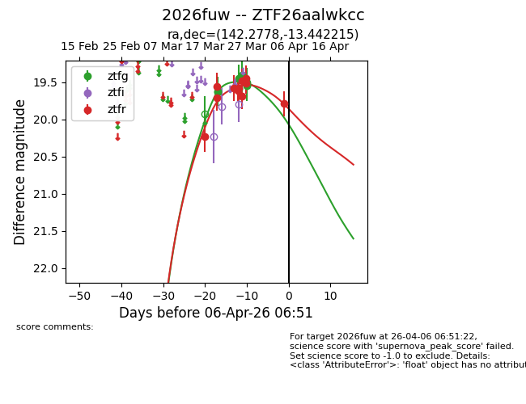
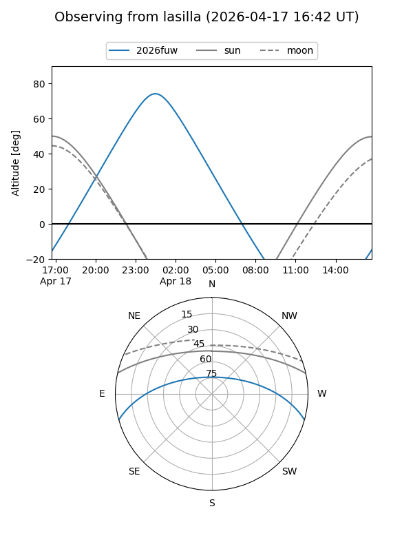
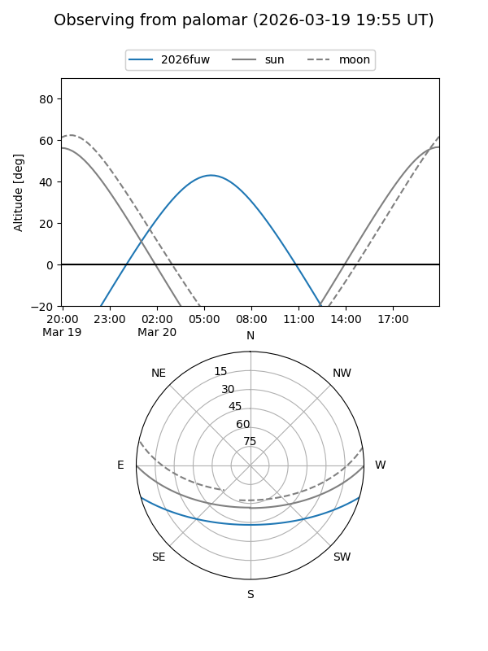
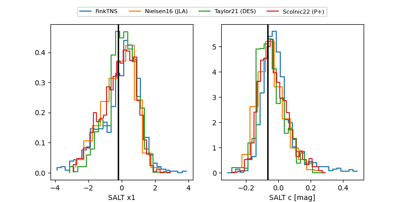

2026fuw
Target 2026fuw at 2026-04-06 06:55
Aliases and brokers:
FINK: link
Lasair: link
ALeRCE: link
TNS: link
YSE: link
alt names
ZTF26aalwkcc (ztf,fink_ztf)
2026fuw (tns,yse)
Coordinates:
equatorial (ra, dec) = 142.2778,-13.44221
equatorial (HMS+DMS) = 09:29:06.67,-13:26:31.97
galactic (l, b) = (245.9617,+26.33641)
Flags:
Photometry:
last ztfg=19.54, ztfr=19.79
7 ztfg, 11 ztfr detections
Lightcurve

Visibility


Additional plots
